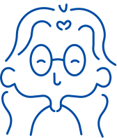
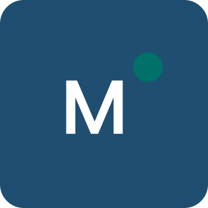
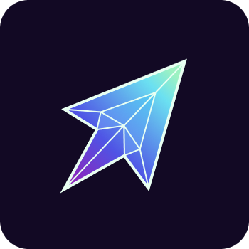
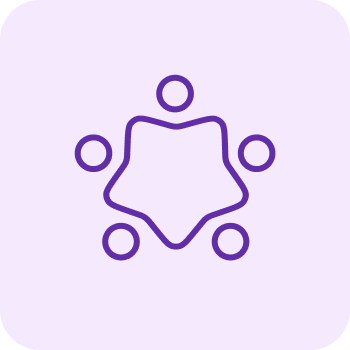
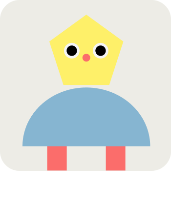
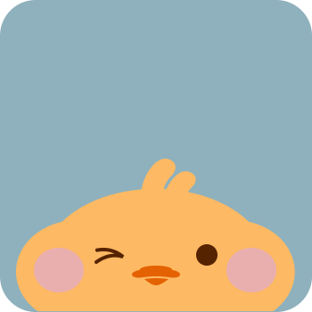
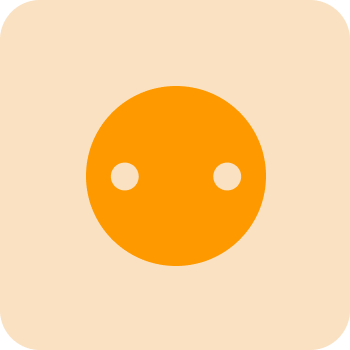

Design Computacional - UFC
Aplicação de design computacional e programação generativa na transformação de sons
em
manifestações visuais acessíveis a pessoas com deficiência auditiva.

PORTI-|
↓Aplicação de design computacional e programação generativa na transformação de sons
em
manifestações visuais acessíveis a pessoas com deficiência auditiva.
Formação prática em Design UI/UX, com participação em mentorias e no desenvolvimento de aplicativos para o ecossistema Apple.
Pesquisa e desenvolvimento nas áreas de Design, Interação Humano-Computador e Experiência
do Usuário, com foco na concepção e no desenvolvimento de produtos multimídia.
Desenvolvimento de solução tecnológica, com atuação nas etapas de concepção, design UI/UX
e desenvolvimento de interfaces para aplicações digitais.
Desenvolvimento de plataforma educacional adaptada, com foco em acessibilidade e ensino
de eletrônica por meio de microcontroladores Arduino.
Alimentação, atualização e manutenção do site de três cursos do "Compromisso Nacional Toda Matemática", com organização, publicação e gerenciamento de conteúdos e informações institucionais.

Aplicativo que otimiza a comunicação entre Centrais de Transplantes e equipes médicas na alocação de órgãos.

Sistema de infotainment automotivo que reduz distrações visuais e cognitivas, promovendo uma experiência mais intuitiva e segura durante a condução.

Plataforma educacional que integra mentorias, registros de aprendizagem e acompanhamento de estudantes, adaptando a metodologia Challenge Based Learning (CBL) ao ambiente digital.

Jogo educativo de japonês que combina kanas e kanjis com seus significados e pronúncias por meio de partidas de memória, tornando o aprendizado mais visual, divertido e interativo.
Design de produto que desenvolve uma almofada portátil inteligente com funções de massagem e segurança, proporcionando mais conforto e bem-estar durante deslocamentos urbanos.

Meu primeiro projeto solo de identidade visual na graduação, criado para a marca fictícia desenvolvedora do sistema Hermes.

Plataforma acadêmica que centraliza reservas de espaços e equipamentos e avisos, facilitando a comunicação e a organização da comunidade universitária por meio de uma interface interativa.
Oi, meu nome é Taís!
Pesquisadora de UX, designer de produto e entusiasta de front-end.
Projeto produtos digitais acessíveis, funcionais e orientados por dados.